따로국밥
따로또로
밥그릇 따로와 국그릇 또로는 붙어 있으면 티격태격해요. 숟가락이 늘 가운데서 말려요.
저장움직이는 캐릭터 10종이에요. 저장 버튼을 누르면 SVG 파일로 받을 수 있어요.

따로국밥
밥그릇 따로와 국그릇 또로는 붙어 있으면 티격태격해요. 숟가락이 늘 가운데서 말려요.
저장
동인동 찜갈비
갈비와 알통을 합친 이름이에요. 찌그러진 양은 냄비가 자기 헬스장이고, 매워도 땀 흘리며 버텨요.
저장
막창구이
석쇠가 뜨거워도 된장 소스만 있으면 행복해요. 통통 뛰면서 손님에게 인사해요.
저장
논메기매운탕
얼큰한 국물을 온천처럼 즐기는 장난꾸러기예요. 미나리 모자를 쓰고 혀를 내밀어요.
저장
복어불고기
기분이 좋으면 빵빵해지고, 푸슈 바람을 뿜으며 줄어들어요. 콩나물 침대를 제일 좋아해요.
저장
누른국수
홍두깨에 꾹꾹 눌려도 금세 말랑하게 돌아오는 긍정왕이에요. 팔은 국수가락이에요.
저장
무침회
오이 안경을 낀 멋쟁이 오징어예요. 춤을 추면서 채소를 휙휙 던져 무쳐요.
저장
야끼우동
불맛에 진심인 뽀글머리 록스타예요. 선글라스는 불 앞에서도 절대 벗지 않아요.
저장
납작만두
납작한 몸이 최고의 자랑이에요. 옆으로 돌면 종이처럼 사라졌다가 짠 하고 나타나요.
저장
뭉티기
쫀득한 부끄럼쟁이예요. 젓가락이 다가오면 얼굴이 빨개져서 슬쩍 피해요.
저장